Summary
This experiment investigates dog training effectiveness. Central composite design to maximize command reliability and minimize training time by tuning session length, reward frequency, and difficulty progression rate.
The design varies 3 factors: session min (min), ranging from 5 to 20, reward ratio pct (%), ranging from 30 to 100, and progression rate (level/wk), ranging from 1 to 5. The goal is to optimize 2 responses: reliability pct (%) (maximize) and sessions to learn (sessions) (minimize). Fixed conditions held constant across all runs include method = positive_reinforcement, breed = labrador.
A Central Composite Design (CCD) was selected to fit a full quadratic response surface model, including curvature and interaction effects. With 3 factors this produces 22 runs including center points and axial (star) points that extend beyond the factorial range.
Quadratic response surface models were fitted to capture potential curvature and factor interactions. The RSM contour plots below visualize how pairs of factors jointly affect each response.
Key Findings
For reliability pct, the most influential factors were session min (43.5%), progression rate (36.5%), reward ratio pct (20.0%). The best observed value was 80.0 (at session min = 5, reward ratio pct = 100, progression rate = 5).
For sessions to learn, the most influential factors were session min (44.0%), progression rate (32.0%), reward ratio pct (24.0%). The best observed value was 7.0 (at session min = 5, reward ratio pct = 100, progression rate = 5).
Recommended Next Steps
- Run confirmation experiments at the predicted optimal settings to validate the model.
- Consider whether any fixed factors should be varied in a future study.
Experimental Setup
Factors
| Factor | Low | High | Unit |
|---|
session_min | 5 | 20 | min |
reward_ratio_pct | 30 | 100 | % |
progression_rate | 1 | 5 | level/wk |
Fixed: method = positive_reinforcement, breed = labrador
Responses
| Response | Direction | Unit |
|---|
reliability_pct | ↑ maximize | % |
sessions_to_learn | ↓ minimize | sessions |
Configuration
{
"metadata": {
"name": "Dog Training Effectiveness",
"description": "Central composite design to maximize command reliability and minimize training time by tuning session length, reward frequency, and difficulty progression rate"
},
"factors": [
{
"name": "session_min",
"levels": [
"5",
"20"
],
"type": "continuous",
"unit": "min"
},
{
"name": "reward_ratio_pct",
"levels": [
"30",
"100"
],
"type": "continuous",
"unit": "%"
},
{
"name": "progression_rate",
"levels": [
"1",
"5"
],
"type": "continuous",
"unit": "level/wk"
}
],
"fixed_factors": {
"method": "positive_reinforcement",
"breed": "labrador"
},
"responses": [
{
"name": "reliability_pct",
"optimize": "maximize",
"unit": "%"
},
{
"name": "sessions_to_learn",
"optimize": "minimize",
"unit": "sessions"
}
],
"settings": {
"operation": "central_composite",
"test_script": "use_cases/171_dog_training_protocol/sim.sh"
}
}
Experimental Matrix
The Central Composite Design produces 22 runs. Each row is one experiment with specific factor settings.
| Run | session_min | reward_ratio_pct | progression_rate |
|---|
| 1 | 12.5 | 65 | 3 |
| 2 | 20 | 30 | 5 |
| 3 | 5 | 100 | 1 |
| 4 | 12.5 | 128.901 | 3 |
| 5 | 12.5 | 65 | 3 |
| 6 | -1.19306 | 65 | 3 |
| 7 | 12.5 | 65 | -0.651484 |
| 8 | 12.5 | 65 | 3 |
| 9 | 20 | 100 | 1 |
| 10 | 26.1931 | 65 | 3 |
| 11 | 12.5 | 65 | 3 |
| 12 | 12.5 | 1.09903 | 3 |
| 13 | 12.5 | 65 | 3 |
| 14 | 5 | 30 | 5 |
| 15 | 12.5 | 65 | 3 |
| 16 | 20 | 30 | 1 |
| 17 | 12.5 | 65 | 6.65148 |
| 18 | 20 | 100 | 5 |
| 19 | 12.5 | 65 | 3 |
| 20 | 5 | 30 | 1 |
| 21 | 5 | 100 | 5 |
| 22 | 12.5 | 65 | 3 |
Step-by-Step Workflow
1
Preview the design
$ python doe.py info --config use_cases/171_dog_training_protocol/config.json
2
Generate the runner script
$ python doe.py generate --config use_cases/171_dog_training_protocol/config.json \
--output use_cases/171_dog_training_protocol/results/run.sh --seed 42
3
Execute the experiments
$ bash use_cases/171_dog_training_protocol/results/run.sh
4
Analyze results
$ python doe.py analyze --config use_cases/171_dog_training_protocol/config.json
5
Get optimization recommendations
$ python doe.py optimize --config use_cases/171_dog_training_protocol/config.json
6
Multi-objective optimization
With 2 competing responses, use --multi to find the best compromise via Derringer–Suich desirability.
$ python doe.py optimize --config use_cases/171_dog_training_protocol/config.json --multi
7
Generate the HTML report
$ python doe.py report --config use_cases/171_dog_training_protocol/config.json \
--output use_cases/171_dog_training_protocol/results/report.html
Features Exercised
| Feature | Value |
|---|
| Design type | central_composite |
| Factor types | continuous (all 3) |
| Arg style | double-dash |
| Responses | 2 (reliability_pct ↑, sessions_to_learn ↓) |
| Total runs | 22 |
Analysis Results
Generated from actual experiment runs using the DOE Helper Tool.
Response: reliability_pct
Top factors: session_min (43.5%), progression_rate (36.5%), reward_ratio_pct (20.0%).
ANOVA
| Source | DF | SS | MS | F | p-value |
|---|
| Source | DF | SS | MS | F | p-value |
| session_min | 4 | 373.9015 | 93.4754 | 2.974 | 0.0804 |
| reward_ratio_pct | 4 | 57.9015 | 14.4754 | 0.461 | 0.7633 |
| progression_rate | 4 | 150.5682 | 37.6420 | 1.198 | 0.3756 |
| Lack | of | Fit | 2 | 10.9470 | 5.4735 |
| Pure | Error | 7 | 220.0000 | | |
| Error | 9 | 230.9470 | 31.4286 | | |
| Total | 21 | 813.3182 | 38.7294 | | |
Pareto Chart
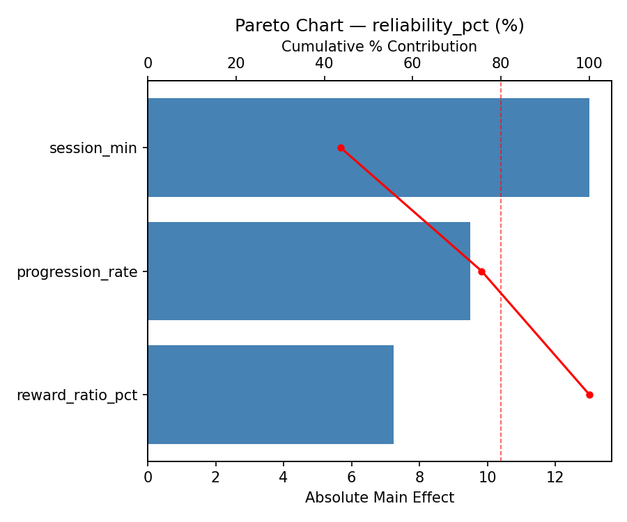
Main Effects Plot
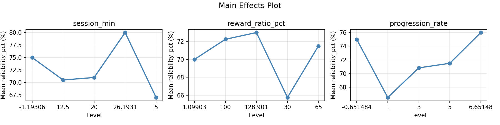
Normal Probability Plot of Effects
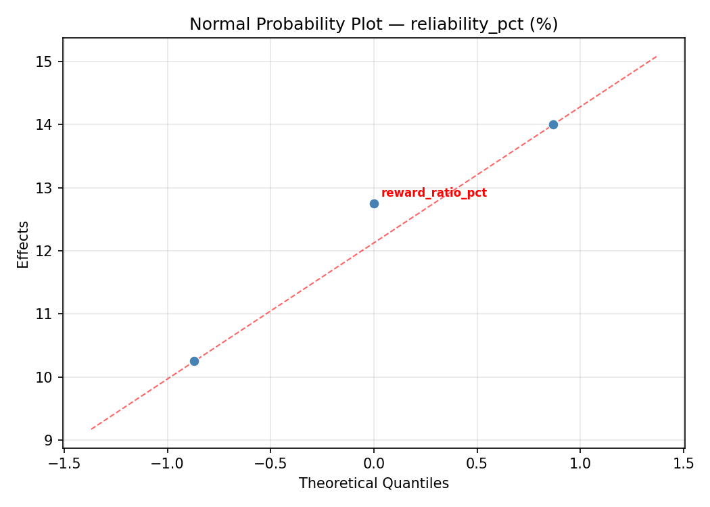
Half-Normal Plot of Effects
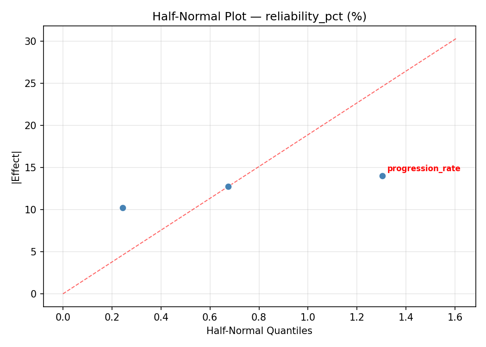
Model Diagnostics
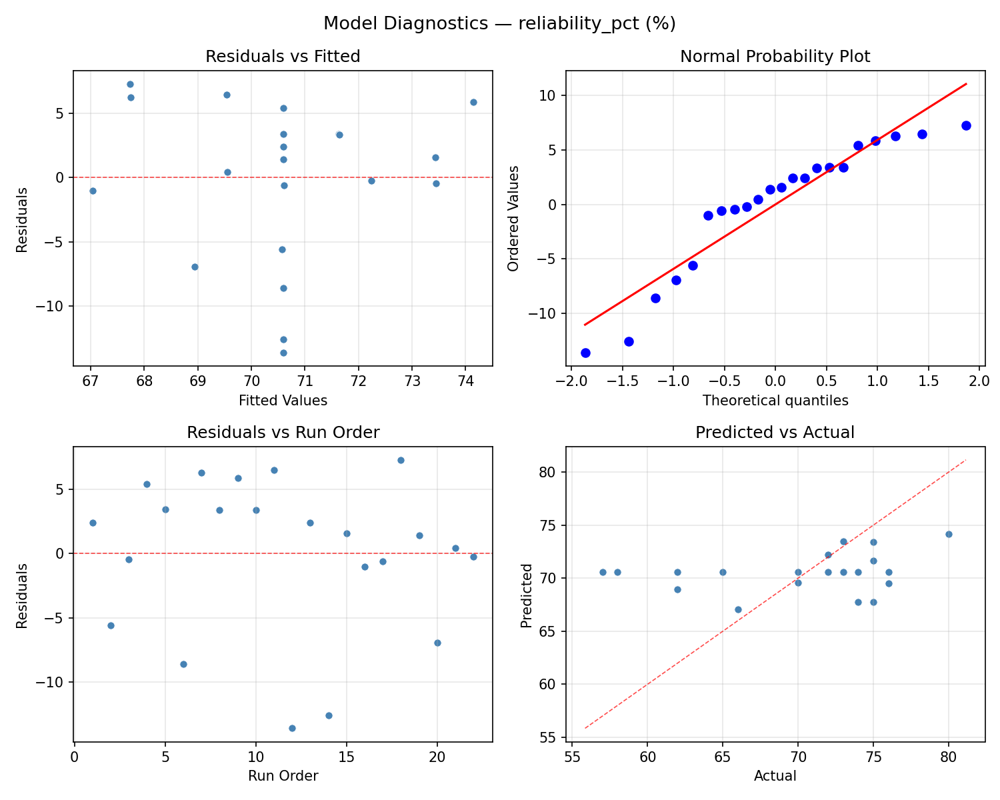
Response: sessions_to_learn
Top factors: session_min (44.0%), progression_rate (32.0%), reward_ratio_pct (24.0%).
ANOVA
| Source | DF | SS | MS | F | p-value |
|---|
| Source | DF | SS | MS | F | p-value |
| session_min | 4 | 76.0682 | 19.0170 | 3.698 | 0.0478 |
| reward_ratio_pct | 4 | 23.4015 | 5.8504 | 1.138 | 0.3983 |
| progression_rate | 4 | 31.8182 | 7.9545 | 1.547 | 0.2690 |
| Lack | of | Fit | 2 | 0.0000 | 0.0000 |
| Pure | Error | 7 | 36.0000 | | |
| Error | 9 | 18.5303 | 5.1429 | | |
| Total | 21 | 149.8182 | 7.1342 | | |
Pareto Chart
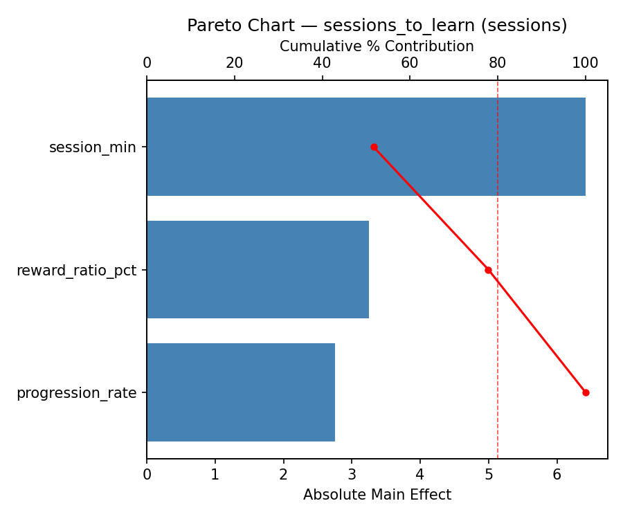
Main Effects Plot
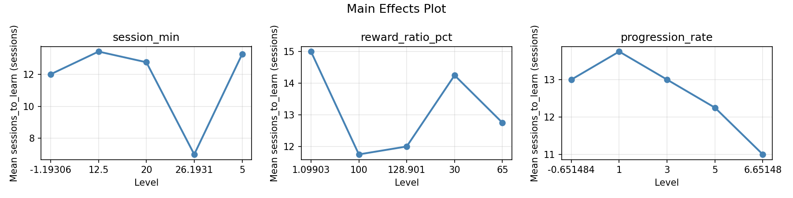
Normal Probability Plot of Effects
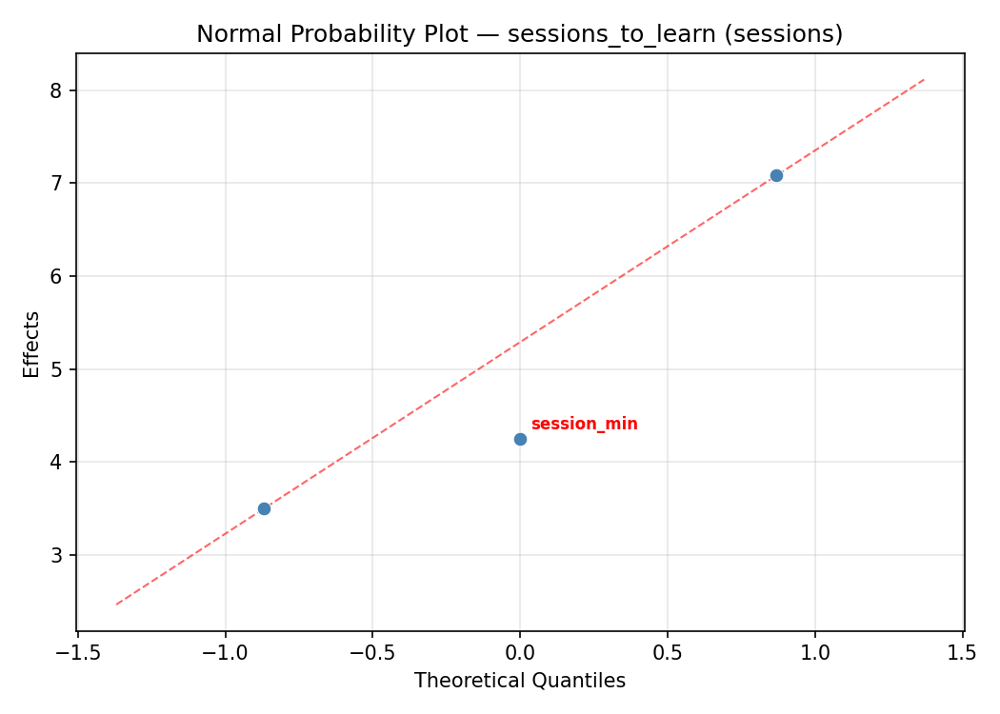
Half-Normal Plot of Effects
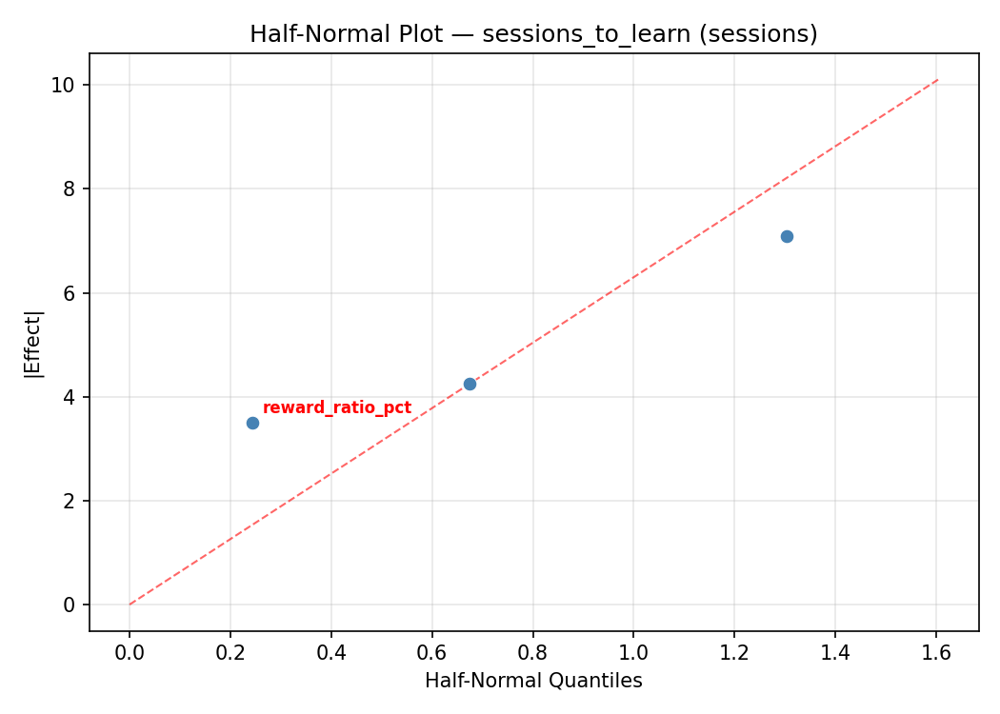
Model Diagnostics
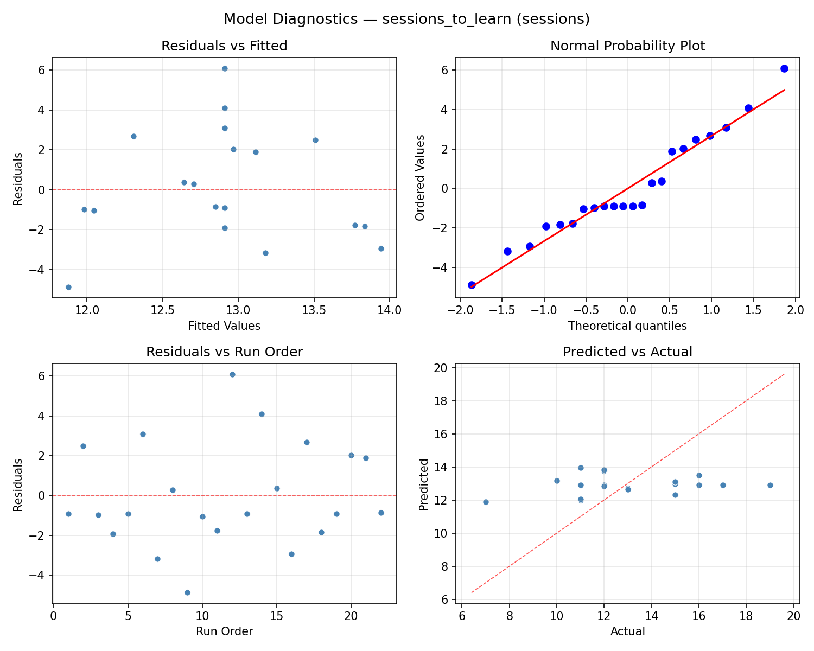
Response Surface Plots
3D surfaces fitted with quadratic RSM. Red dots are observed data points.
reliability pct reward ratio pct vs progression rate
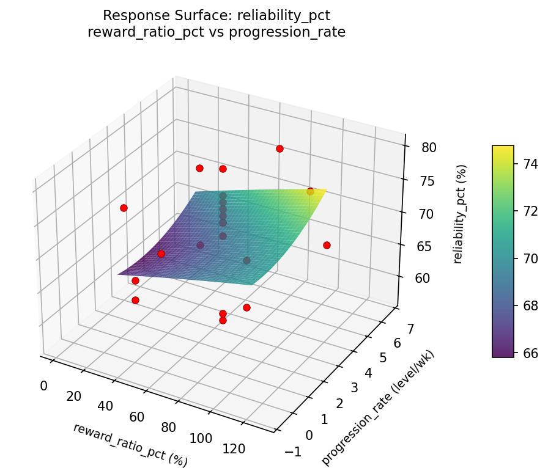
reliability pct session min vs progression rate
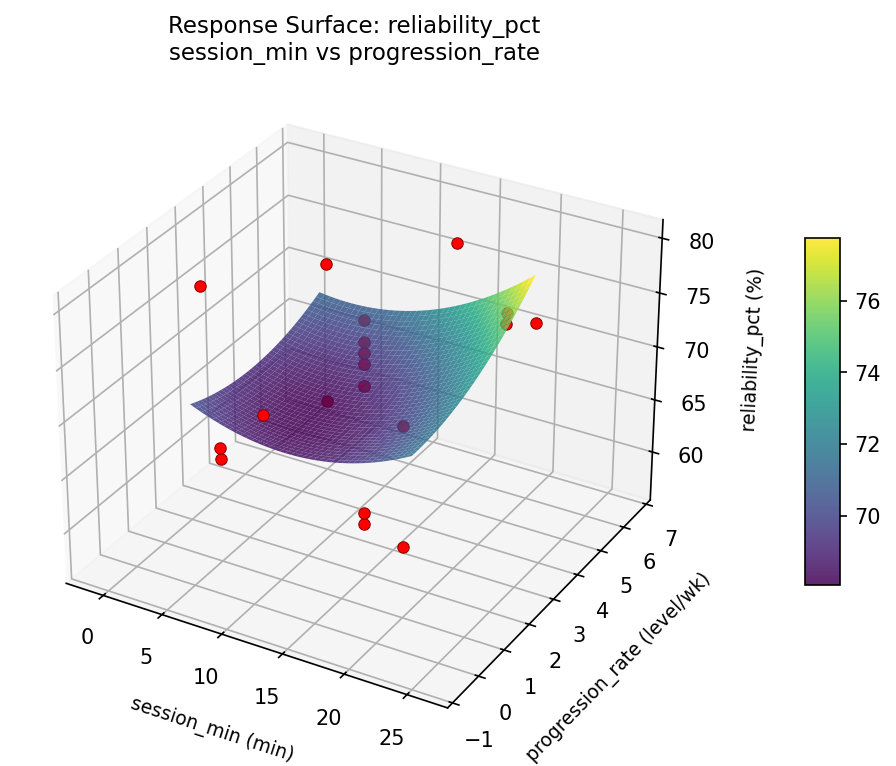
reliability pct session min vs reward ratio pct
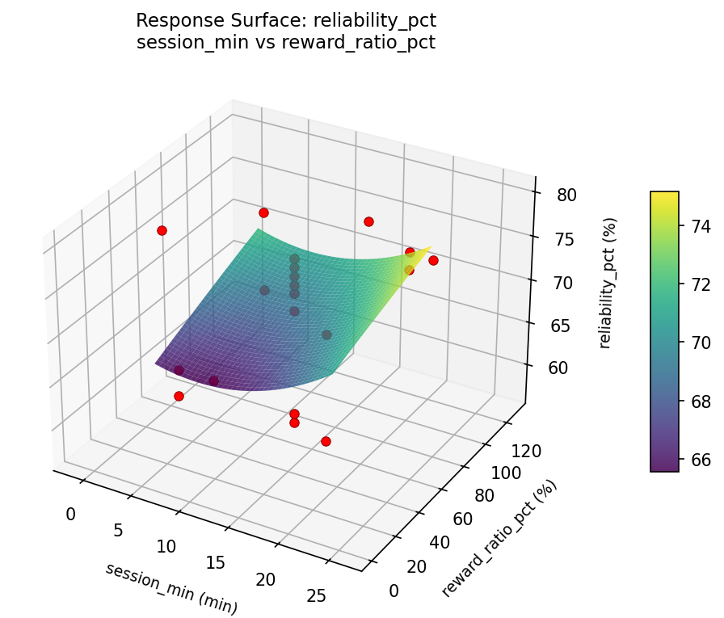
sessions to learn reward ratio pct vs progression rate
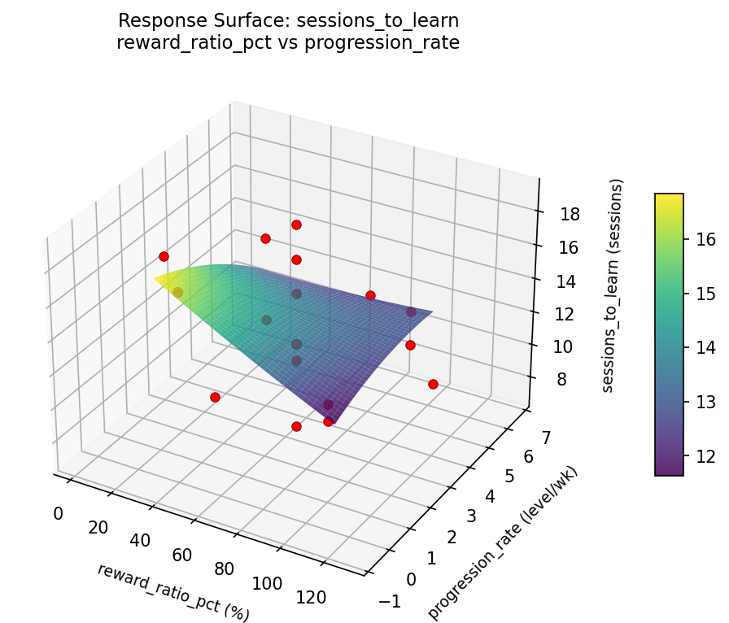
sessions to learn session min vs progression rate
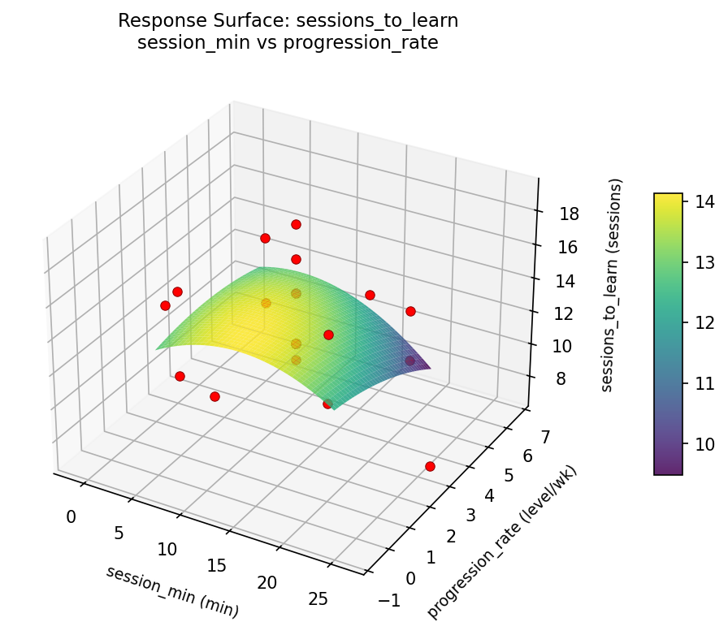
sessions to learn session min vs reward ratio pct
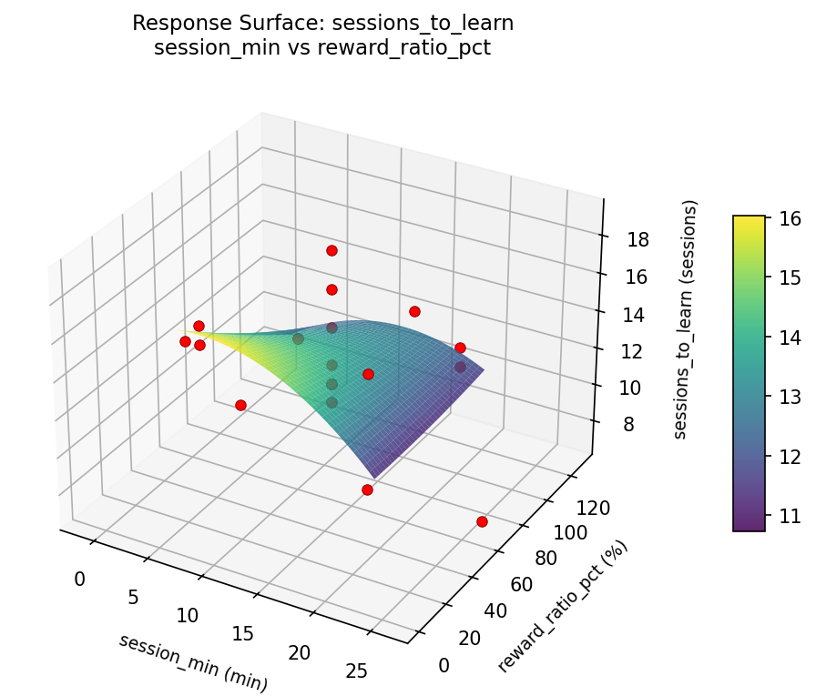
Multi-Objective Optimization
When responses compete, Derringer–Suich desirability finds the best compromise.
Each response is scaled to a 0–1 desirability, then combined via a weighted geometric mean.
Overall Desirability
D = 0.9545
Per-Response Desirability
| Response | Weight | Desirability | Predicted | Dir |
|---|
reliability_pct |
1.5 |
|
80.00 0.9545 80.00 % |
↑ |
sessions_to_learn |
1.0 |
|
7.00 0.9545 7.00 sessions |
↓ |
Recommended Settings
| Factor | Value |
|---|
session_min | 12.5 min |
reward_ratio_pct | 65 % |
progression_rate | 6.65148 level/wk |
Source: from observed run #9
Trade-off Summary
Sacrifice = how much worse than single-objective best.
| Response | Predicted | Best Observed | Sacrifice |
|---|
sessions_to_learn | 7.00 | 7.00 | +0.00 |
Top 3 Runs by Desirability
| Run | D | Factor Settings |
|---|
| #4 | 0.7350 | session_min=12.5, reward_ratio_pct=65, progression_rate=3 |
| #7 | 0.7213 | session_min=12.5, reward_ratio_pct=1.09903, progression_rate=3 |
Model Quality
| Response | R² | Type |
|---|
sessions_to_learn | 0.3560 | linear |
Full Multi-Objective Output
============================================================
MULTI-OBJECTIVE OPTIMIZATION
Method: Derringer-Suich Desirability Function
============================================================
Overall desirability: D = 0.9545
Response Weight Desirability Predicted Direction
---------------------------------------------------------------------
reliability_pct 1.5 0.9545 80.00 % ↑
sessions_to_learn 1.0 0.9545 7.00 sessions ↓
Recommended settings:
session_min = 12.5 min
reward_ratio_pct = 65 %
progression_rate = 6.65148 level/wk
(from observed run #9)
Trade-off summary:
reliability_pct: 80.00 (best observed: 80.00, sacrifice: +0.00)
sessions_to_learn: 7.00 (best observed: 7.00, sacrifice: +0.00)
Model quality:
reliability_pct: R² = 0.1362 (linear)
sessions_to_learn: R² = 0.3560 (linear)
Top 3 observed runs by overall desirability:
1. Run #9 (D=0.9545): session_min=12.5, reward_ratio_pct=65, progression_rate=6.65148
2. Run #4 (D=0.7350): session_min=12.5, reward_ratio_pct=65, progression_rate=3
3. Run #7 (D=0.7213): session_min=12.5, reward_ratio_pct=1.09903, progression_rate=3
Full Analysis Output
=== Main Effects: reliability_pct ===
Factor Effect Std Error % Contribution
--------------------------------------------------------------
session_min 12.5000 1.3268 43.5%
progression_rate 10.5000 1.3268 36.5%
reward_ratio_pct 5.7500 1.3268 20.0%
=== ANOVA Table: reliability_pct ===
Source DF SS MS F p-value
-----------------------------------------------------------------------------
session_min 4 373.9015 93.4754 2.974 0.0804
reward_ratio_pct 4 57.9015 14.4754 0.461 0.7633
progression_rate 4 150.5682 37.6420 1.198 0.3756
Lack of Fit 2 10.9470 5.4735 0.174 0.8437
Pure Error 7 220.0000 31.4286
Error 9 230.9470 31.4286
Total 21 813.3182 38.7294
=== Summary Statistics: reliability_pct ===
session_min:
Level N Mean Std Min Max
------------------------------------------------------------
-1.19306 1 75.0000 0.0000 75.0000 75.0000
12.5 12 71.1667 5.3908 62.0000 80.0000
20 4 74.7500 1.5000 73.0000 76.0000
26.1931 1 75.0000 0.0000 75.0000 75.0000
5 4 62.5000 6.1373 57.0000 70.0000
reward_ratio_pct:
Level N Mean Std Min Max
------------------------------------------------------------
1.09903 1 74.0000 0.0000 74.0000 74.0000
100 4 68.2500 8.3417 58.0000 76.0000
128.901 1 70.0000 0.0000 70.0000 70.0000
30 4 69.0000 8.3666 57.0000 76.0000
65 12 71.6667 5.5323 62.0000 80.0000
progression_rate:
Level N Mean Std Min Max
------------------------------------------------------------
-0.651484 1 62.0000 0.0000 62.0000 62.0000
1 4 68.7500 7.3655 58.0000 74.0000
3 12 72.5000 4.7001 62.0000 80.0000
5 4 68.5000 9.2556 57.0000 76.0000
6.65148 1 72.0000 0.0000 72.0000 72.0000
=== Main Effects: sessions_to_learn ===
Factor Effect Std Error % Contribution
--------------------------------------------------------------
session_min 5.5000 0.5695 44.0%
progression_rate 4.0000 0.5695 32.0%
reward_ratio_pct 3.0000 0.5695 24.0%
=== ANOVA Table: sessions_to_learn ===
Source DF SS MS F p-value
-----------------------------------------------------------------------------
session_min 4 76.0682 19.0170 3.698 0.0478
reward_ratio_pct 4 23.4015 5.8504 1.138 0.3983
progression_rate 4 31.8182 7.9545 1.547 0.2690
Lack of Fit 2 0.0000 0.0000 0.000 1.0000
Pure Error 7 36.0000 5.1429
Error 9 18.5303 5.1429
Total 21 149.8182 7.1342
=== Summary Statistics: sessions_to_learn ===
session_min:
Level N Mean Std Min Max
------------------------------------------------------------
-1.19306 1 13.0000 0.0000 13.0000 13.0000
12.5 12 12.2500 2.3789 7.0000 16.0000
20 4 11.2500 0.9574 10.0000 12.0000
26.1931 1 12.0000 0.0000 12.0000 12.0000
5 4 16.7500 1.7078 15.0000 19.0000
reward_ratio_pct:
Level N Mean Std Min Max
------------------------------------------------------------
1.09903 1 12.0000 0.0000 12.0000 12.0000
100 4 13.7500 3.3040 10.0000 17.0000
128.901 1 15.0000 0.0000 15.0000 15.0000
30 4 14.2500 3.5940 11.0000 19.0000
65 12 12.0833 2.2344 7.0000 16.0000
progression_rate:
Level N Mean Std Min Max
------------------------------------------------------------
-0.651484 1 16.0000 0.0000 16.0000 16.0000
1 4 13.5000 3.1091 10.0000 17.0000
3 12 12.0000 2.0889 7.0000 15.0000
5 4 14.5000 3.6968 11.0000 19.0000
6.65148 1 12.0000 0.0000 12.0000 12.0000
Optimization Recommendations
=== Optimization: reliability_pct ===
Direction: maximize
Best observed run: #9
session_min = 5
reward_ratio_pct = 100
progression_rate = 5
Value: 80.0
RSM Model (linear, R² = 0.0735, Adj R² = -0.0809):
Coefficients:
intercept +70.5909
session_min +1.7546
reward_ratio_pct +0.7412
progression_rate +0.6699
RSM Model (quadratic, R² = 0.2955, Adj R² = -0.2328):
Coefficients:
intercept +69.1699
session_min +1.7546
reward_ratio_pct +0.7412
progression_rate +0.6699
session_min*reward_ratio_pct -2.2500
session_min*progression_rate -3.2500
reward_ratio_pct*progression_rate -0.5000
session_min^2 +0.4105
reward_ratio_pct^2 +0.1105
progression_rate^2 +1.6105
Curvature analysis:
progression_rate coef=+1.6105 convex (has a minimum)
session_min coef=+0.4105 convex (has a minimum)
reward_ratio_pct coef=+0.1105 convex (has a minimum)
Notable interactions:
session_min*progression_rate coef=-3.2500 (antagonistic)
session_min*reward_ratio_pct coef=-2.2500 (antagonistic)
reward_ratio_pct*progression_rate coef=-0.5000 (antagonistic)
Predicted optimum (from linear model, at observed points):
session_min = 26.1931
reward_ratio_pct = 65
progression_rate = 3
Predicted value: 73.7944
Surface optimum (via L-BFGS-B, linear model):
session_min = 20
reward_ratio_pct = 100
progression_rate = 5
Predicted value: 73.7567
Model quality: Weak fit — consider adding center points or using a different design.
Factor importance:
1. session_min (effect: 13.0, contribution: 45.1%)
2. reward_ratio_pct (effect: 10.5, contribution: 36.4%)
3. progression_rate (effect: 5.3, contribution: 18.5%)
=== Optimization: sessions_to_learn ===
Direction: minimize
Best observed run: #9
session_min = 5
reward_ratio_pct = 100
progression_rate = 5
Value: 7.0
RSM Model (linear, R² = 0.0452, Adj R² = -0.1139):
Coefficients:
intercept +12.9091
session_min -0.1689
reward_ratio_pct -0.6255
progression_rate -0.2045
RSM Model (quadratic, R² = 0.3159, Adj R² = -0.1972):
Coefficients:
intercept +13.0275
session_min -0.1689
reward_ratio_pct -0.6255
progression_rate -0.2045
session_min*reward_ratio_pct +0.6250
session_min*progression_rate +1.6250
reward_ratio_pct*progression_rate -0.6250
session_min^2 +0.0908
reward_ratio_pct^2 +0.3908
progression_rate^2 -0.6592
Curvature analysis:
progression_rate coef=-0.6592 concave (has a maximum)
reward_ratio_pct coef=+0.3908 convex (has a minimum)
session_min coef=+0.0908 negligible curvature
Notable interactions:
session_min*progression_rate coef=+1.6250 (synergistic)
reward_ratio_pct*progression_rate coef=-0.6250 (antagonistic)
session_min*reward_ratio_pct coef=+0.6250 (synergistic)
Predicted optimum (from linear model, at observed points):
session_min = 12.5
reward_ratio_pct = 1.09903
progression_rate = 3
Predicted value: 14.0511
Surface optimum (via L-BFGS-B, linear model):
session_min = 20
reward_ratio_pct = 100
progression_rate = 5
Predicted value: 11.9101
Model quality: Weak fit — consider adding center points or using a different design.
Factor importance:
1. reward_ratio_pct (effect: 5.5, contribution: 44.9%)
2. session_min (effect: 4.5, contribution: 36.7%)
3. progression_rate (effect: 2.2, contribution: 18.4%)